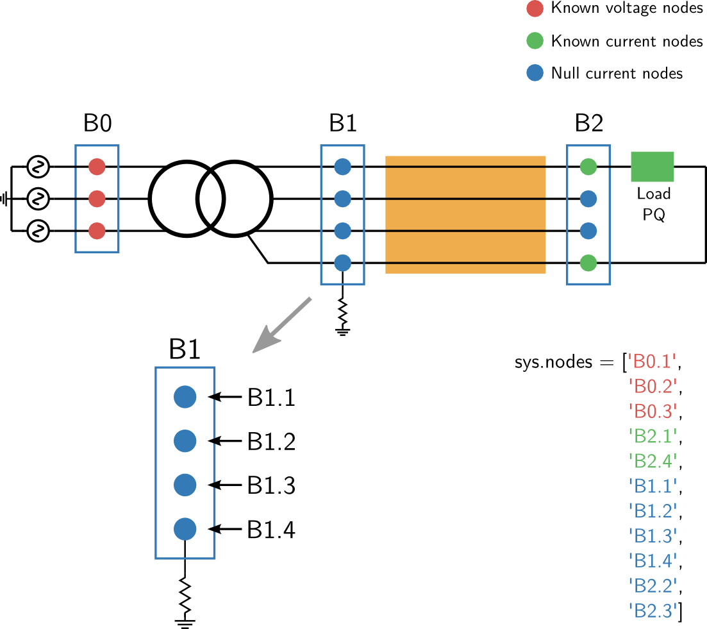

Definitions¶
Buses and Nodes¶
to_do
Nodes order¶
The nodes order in the voltages and currents vectors V_node and I_node is as follows:
- nodes with grid formers (known voltages)
- nodes with loads or greed feeders (known currents)
- transition nodes (zeros current injections)
Example¶
V_known has the nodes with grid formers sources V_unknown has the rest of the nodes
V_sorted ...
Buses order is as defined in the key buses of the .json file or data dictionary.
Buses results voltages¶